Kantor AI yang langsung kerja.
Ketik perintah, 18 agen berbagi tugas, kamu yang menyetujui.

Satu perintah, dua jalur kerja
- Riset Raka mencari bahan di Google Trends, Google News, dan Hacker News.
- Produksi Naskah, carousel, rencana Remotion (Bima), dan prompt Google Flow (Fira). Naskah kamu cek dulu.
- Persetujuan Tidak ada yang terbit sebelum kamu setujui.
- Rencana Arga menyusun PRD dan arsitektur dari brief atau dokumenmu.
- Kerja dan uji Rani mendesain, Fajar menulis kode, Tio menguji, Damar mengaudit keamanan.
- Rilis Paket rilis siap. Live setelah kamu izinkan.
Kantor 3D dengan dua bangunan
Masuk ke kantor 3D
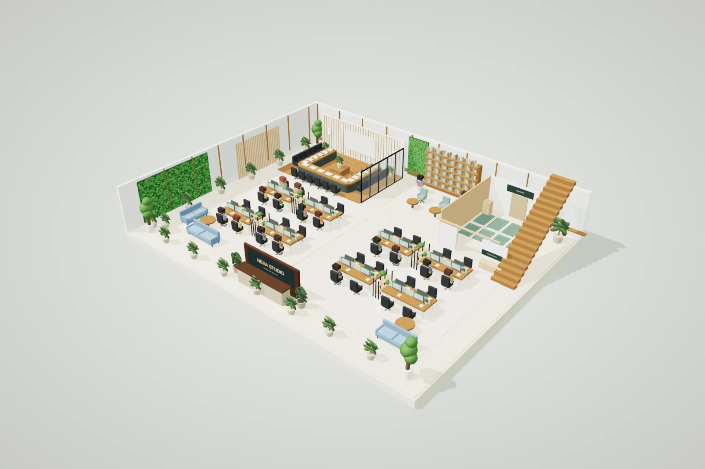
Simulasi visual. Status kerja agen belum tersambung ke kantor.
18 agen, satu tugas masing-masing
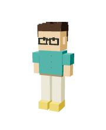
ZUNOOrkestrasi dan koordinasi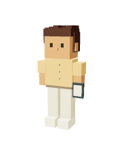
LiaKomunikasi dan laporan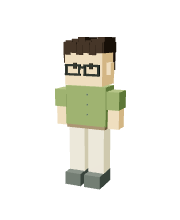
RakaRiset tren dan verifikasi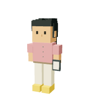
NaraStrategi dan sudut konten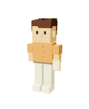
DikaNaskah dan storyboard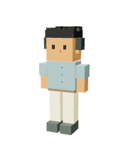
VinoRetensi video dan hook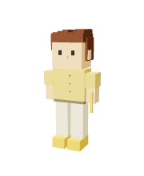
SariVisual dan carousel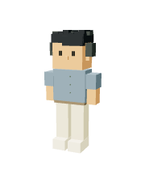
EdoArahan editing dan efek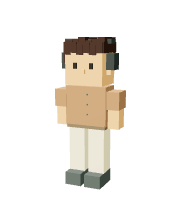
BimaPerencanaan Remotion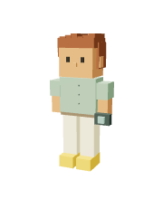
FiraPerencanaan Google Flow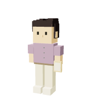
TaraFakta dan suara brand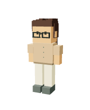
NitaBukti dan format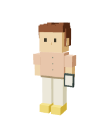
MayaCaption dan antrian posting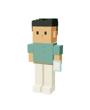
ArgaPRD dan arsitektur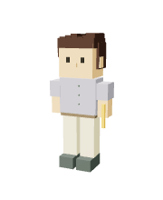
RaniUI/UX dan wireframe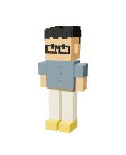
FajarImplementasi aplikasi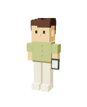
TioTesting dan paket rilis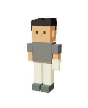
DamarAudit bug dan keamanan
Yang kamu dapat
- Ruang kerja sendiri
- Web Nexaoffice di akun Vercel-mu.
- Kantor 3D
- Dua tema bangunan dan 18 karakter agen.
- Dua divisi
- Konten dan Build App.
- Penyedia AI bebas
- Claude, Gemini, OpenAI, OpenRouter, atau 9router.
- Panduan pasang
- Fork, import ke Vercel, isi kunci, deploy.
Biaya sebelum kamu beli
| Bagian | Biaya |
|---|---|
| Kit Nexaoffice | Harga belum ditentukan |
| Penyedia AI | Sesuai pemakaian, dibayar ke penyedia pilihanmu |
| Hosting | Akun Vercel gratis cukup untuk mulai |
Kontak pembelian: Kontak penjual belum diisi
Yang sering ditanya
Agen bisa posting sendiri?
Tidak. Konten masuk Antrian Posting setelah kamu setujui.
API key disimpan di mana?
Di server Vercel-mu, tidak pernah di halaman.
Kantor 3D berat di laptop?
Pilih kualitas Ringan di pojok kanan bawah kantor.
Bedanya dengan chat AI biasa?
Tiap agen punya peran. Hasil dicek agen lain dulu.